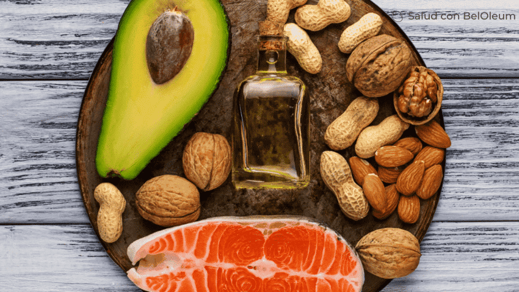

Es fácil sentirse bombardeado con información sobre la última tendencia de alimentación saludable o el ingrediente más comentado. Pero una buena nutrición se trata en realidad de elegir constantemente alimentos y bebidas saludables. Con patrones de alimentación saludables, es posible disfrutar de alimentos y bebidas que reflejen sus preferencias, tradiciones culturales y presupuesto. Aquí tienes algunos consejos para una alimentación saludable.
Aumentar la ingesta de calcio y vitamina D aporta una serie de beneficios fundamentales para la salud, ya que estos nutrientes desempeñan roles cruciales en el funcionamiento óptimo del cuerpo. El calcio es fundamental para la formación y mantenimiento de huesos y dientes fuertes. Un aumento en la ingesta de calcio contribuye a prevenir enfermedades óseas como la osteoporosis, especialmente en etapas de la vida donde el cuerpo está construyendo y fortaleciendo su estructura ósea, como la infancia, la adolescencia y la adultez temprana.
La vitamina D también desempeña un papel fundamental en la regulación del sistema inmunológico y en la función celular adecuada. Además, se ha demostrado que la vitamina D contribuye a la prevención de enfermedades crónicas como la diabetes tipo 2, las enfermedades cardiovasculares y ciertos tipos de cáncer.
El potasio ayuda a que los riñones, el corazón, los músculos y los nervios funcionen correctamente. No obtener suficiente potasio puede aumentar la presión arterial, agotar el calcio en los huesos y aumentar el riesgo de cálculos renales. Para aumentar el consumo de potasio, es importante incluir en la dieta alimentos ricos en este mineral, como frutas (plátanos, naranjas, melones), verduras de hojas verdes, legumbres y frutos secos. Sin embargo, es fundamental mantener un equilibrio adecuado entre el potasio y otros minerales como el sodio y el magnesio para evitar desequilibrios electrolíticos.
Demasiada azúcar añadida en su dieta puede contribuir al aumento de peso, la obesidad, la diabetes tipo 2 y las enfermedades del corazón. Algunos alimentos como la fruta y la leche contienen azúcares naturales. Los azúcares añadidos son azúcares y jarabes que se añaden a los alimentos y bebidas cuando se procesan o preparan.
Reemplazar las grasas saturadas con grasas más saludables puede ayudar a proteger su corazón. Las fuentes comunes de grasas saturadas son las carnes grasas como las costillas de res y las salchichas, la leche entera, el queso con toda la grasa, la mantequilla y el queso crema. Necesitamos un poco de grasa en la dieta para darnos energía, ayudarnos a desarrollar células sanas y ayudarnos a absorber algunas vitaminas y minerales, algunos de los alimentos que contienen grasa saludables son los aguacates, frutos secos, semillas, huevos, aceite de oliva, etc.
Reducir el consumo de sodio es esencial para mantener una buena salud y prevenir una serie de problemas médicos. El sodio es un mineral que, en cantidades adecuadas, desempeña funciones importantes en la regulación del equilibrio de fluidos, la función nerviosa y muscular, y la presión arterial. Sin embargo, el consumo excesivo de sodio, comúnmente en forma de sal, puede tener consecuencias negativas para la salud.
Una buena práctica es tratar de incluir una variedad de colores en su plato. Las frutas y verduras, como las verduras de hojas verdes oscuras, las naranjas y los tomates, incluso las hierbas frescas, están cargadas de vitaminas, fibra y minerales.